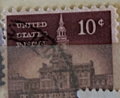
| SOURCE | TITLE| IMAGE MATCH | click to source page |
| Todocolección | sello estados unidos eeuu usa independence hall - Buy Antique stamps of United States on todocoleccion | 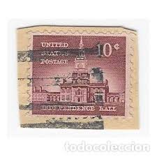 |
| eBay | US Postage Stamp Lot Presidents Cancelled 50s 60s 1 1.25 2 3 4 6 10 20 25 Cents | eBay | 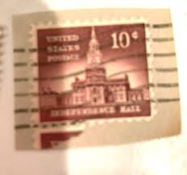 |
| eBay | USA Stamp Independence Hall 10 Cents United States Postage | eBay | 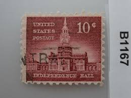 |
| Wikipedia | Independence Hall - Wikipedia | 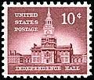 |
| FunTrivia | But Mr. Adams! ("1776"--the movie) Trivia Game | Movies | 10 Questions | 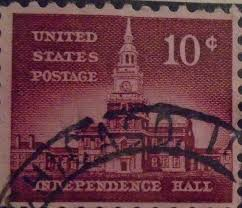 |
| Etsy | 1954 Liberty Series. Set of 26 US Postage Stamps for Sale .. Postage Stamps for the Collector - Etsy UK | 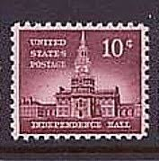 |
| eBay UK | Perfin United States US Stamp Used A20P32F2126 | eBay UK | 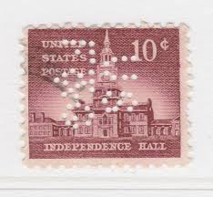 |
| libraryhistorybuff.com | The Library Company of Philadelphia | 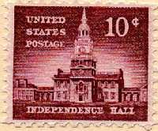 |
| antiqueviewing.com | Global Stamp Collection - Antiques For Sale | 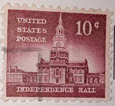 |
| eBay | Perfins USA 1954, Sc1044 4x 10c Independence Hall. Used UofM | eBay | 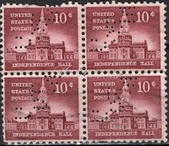 |
| eBay | US. 1044. 10c. Independence Hall, Liberty Issue. PB4 #25861 UR. MNH. 1956 | eBay | 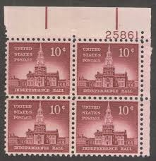 |
| eBay | Pennsylvania 10 Cent Denomination Used US Stamps (1901-Now) for sale | eBay | 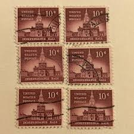 |
| Craigslist | 50 u.s vintage stamps - collectibles - by owner - sale - craigslist | 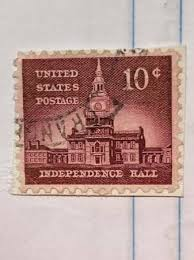 |
| eBay Australia | 1954-1973 USA - Independence Hall, Liberty Issue - Block 5 x 10 Cent Stamps | eBay Australia | 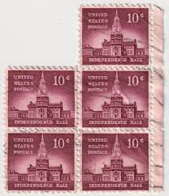 |
| eBay | Used 10 Cent Denomination US Postal Stamp Plate Blocks & Multiples for sale | eBay | 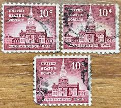 |
| volstamp.in.ua | Buy 1956 United States Stamp (Independence Hall (1753), Philadelphia) Used №665 | 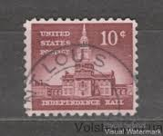 |
| eBay | 1956 10c Independence Hall Scott 1044 Perfin Punched Cancelled Stamp | eBay | 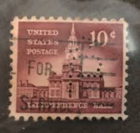 |
| Dreamstime.com | Pennsylvania Stamp Stock Photos - Free & Royalty-Free Stock Photos from Dreamstime | 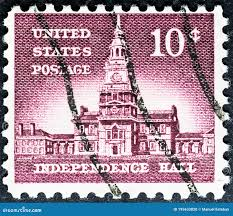 |
| eBay | 1954/1956 Choice of Plate Blocks 1044! MNH US Stamps! Independence Hall Liberty! | eBay | 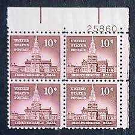 |
| eBay | F/VF (Fine/Very Fine) Mint Never Hinged/MNH Magenta Postal Stamp Plate Blocks & Multiples for sale | eBay | 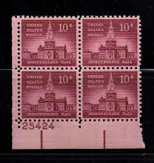 |
| Is this a penny black from st. Vincent . | 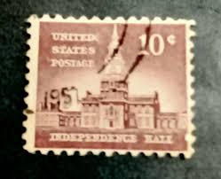 | |
| eBay | US. 1044. 10c. Independence Hall, Liberty Issue. PB4 #27684 UR. MNH. 1956 | eBay | 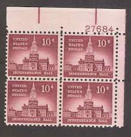 |
| eBay | 1954 US Scott #1044 - 10 Cent Plate Block Independence Hall - MNH/OG/VF | eBay | 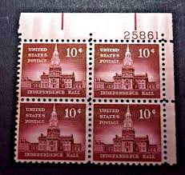 |
| eBay | 1956 10 cent Independence Hall Scott 1044 Block of 4 Mint F/VF NH | eBay | 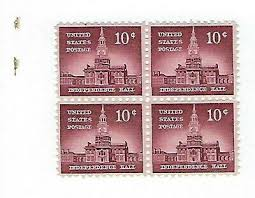 |
| eBay | US 10¢ Stamp SC #1044 INDEPENDENCE HALL MNG 1956 block of 4 with fault. | eBay | 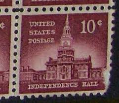 |
| eBay | STAMP US SCOTT 1044 "Independence Hall" 10 CENT 1956 MNH PB OF 4 LR | eBay | 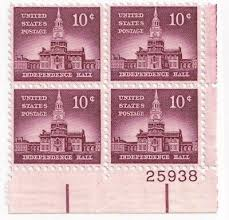 |
| eBay | US. 1044. 10c. Independence Hall, Liberty Issue. PB4 #26951 UR. MNH. 1956 | eBay | 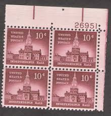 |
| eBay | Perfins USA 1954, Sc1044 2x 10c Independence Hall. Used SNSJNJ | eBay | 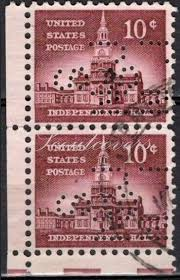 |
| eBay | US Stamps Scott# 1044 "Independence Hall" 10 CENT 1956 MNH | eBay | 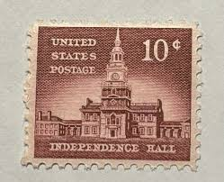 |
| eBay | 1956 10c Independence Hall Scott 1044 Perfin Punched Cancelled Stamp | eBay | 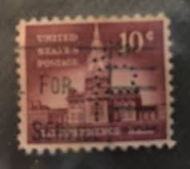 |
| Copyright Office (.gov) | what about those attractive Postage stamps? are they Copyrighted? | 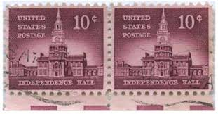 |
| HipStamp | United States 1044 1956 Used | United States, General Issue Stamp / HipStamp | 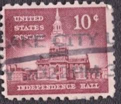 |
| eBay | US Stamp Scott# 1044 1956 10c Independence Hall Used Pair -#B549 | eBay | 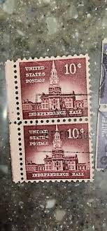 |
| eBay | US. 1044. 10c. Independence Hall, Liberty Issue. PB4 #25861 UR. MNH. 1956 | eBay | 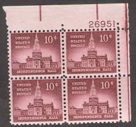 |
| vintagepostagestamps.com | 10¢ Philadelphia (Independence Hall) - Pack of 25 unused stamps from 1956 | Vintage Postage Stamps | 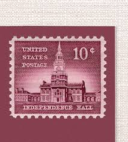 |
| Philadelphia Vintage Stamps! | 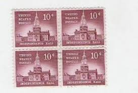 | |
| eBay | STAMP US SCOTT 1044 "Independence Hall" 10 CENT 1956 USED STRIP OF 3 PERFIN | eBay | 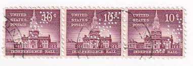 |
| eBay | Scott #1044...10 Cent...Independence Hall...2 Plate Blocks | eBay | 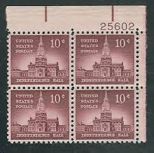 |
| HipStamp | 1044 Independence Hall 25861 Upper Left Plate F-VF NH | United States, General Issue Stamp / HipStamp | 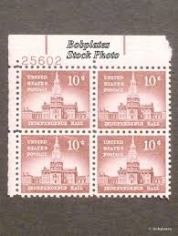 |
| eBay | US. 1044. 10c. Independence Hall, Liberty Issue. PB4 #27684 UR. MNH. 1956 | eBay | 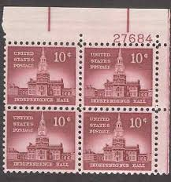 |
| iStock | Postage Stamp Stock Photo - Download Image Now - History, Philadelphia - Pennsylvania, Air Mail - iStock | 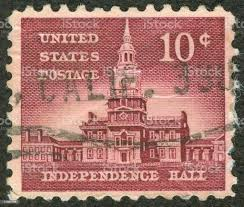 |
| eBay | No: 100896 - USA - AN OLD BLOCK OF 4 - USED!! | eBay | 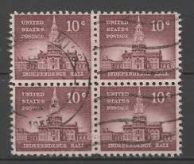 |
| eBay | Block Of 4 U.S. Scott #1044 10 Cent Independence Hall U.S. Postage Stamps | eBay | 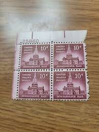 |
| eBay | STAMP US SCOTT 1044 "Independence Hall" 10 CENT 1956 USED BLOCK OF 4 | eBay | 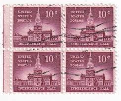 |
| eBay | US Stamps Scott 1044 10c plate block 1956 Independence Hall Issue M/NH Fresh | eBay | 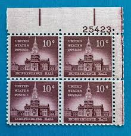 |
| eBay | INDEPENDANCE HALL - U.S. POSTAL STAMP SHEET WITH PROTECTIVE SLEEVE - PN#25861 | eBay | 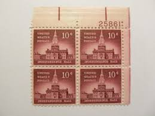 |
| eBay | STAMP US SCOTT 1044 "Independence Hall" 10 CENT 1956 USED FANCY CANCEL | eBay | 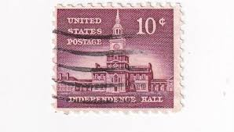 |
| eBay | STAMP US SCOTT 1044 "Independence Hall" 10 CENT 1956 MNG | eBay | 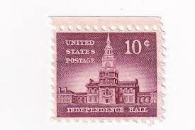 |
| Kenmore Stamp | Liberty Series Plate Blocks - 1950s Plate Blocks - Plate Blocks - USA | 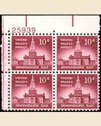 |
| eBay | US Stamp Scott# 1044 1956 10c Independence Hall Used Block Of 8 -#B152 | eBay | |
| eBay | US. 1044. 10c. Independence Hall, Liberty Issue. PB4 #25861 UR. MNH. 1956 | eBay | |
| eBay | US Scott 1044 Plate Block MNH (10 cents) FREE SHIPPING | eBay | |
| eBay | US Stamp Scott# 1044 1956 10c Independence Hall Used Pair -#B402 | eBay | |
| PicClick | VINTAGE 1950'S BELL National 5 Cent Gumball / Candy Vending Machine $245.00 - PicClick | |
| A United States postage perfin. | ||
| eBay | US Postage Stamp 1956 Independence Hall SCOTT 1044 4-10c | eBay | |
| eBay | US Stamps Scott 1044 10c 1956 Liberty Issue Independence Hall block of 4 M/NH | eBay | |
| eBay | US FDC #1734 Artcraft 1978 Kansas City MO Indian Head Penny Cent Coin | eBay | |
| eBay | STAMP US SCOTT 1044 "Independence Hall" 10 CENT 1956 USED HORIZ PAIR | eBay | |
| eBay | Scott #1044, Single 1956 Independence Hall 10c FVF MNH | eBay |